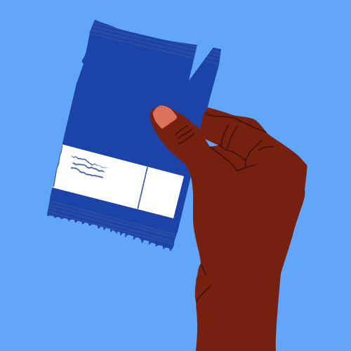
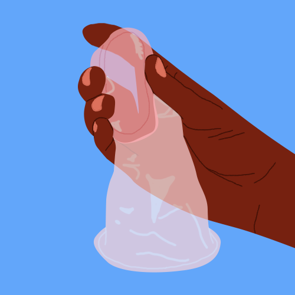
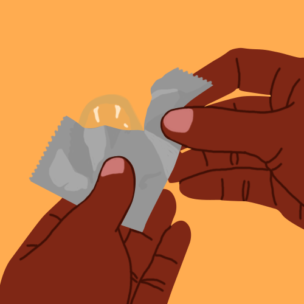
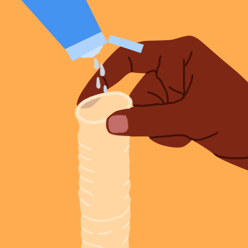
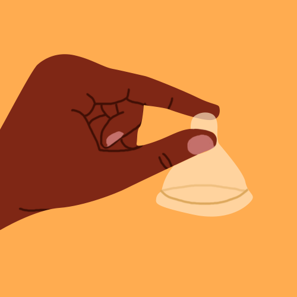
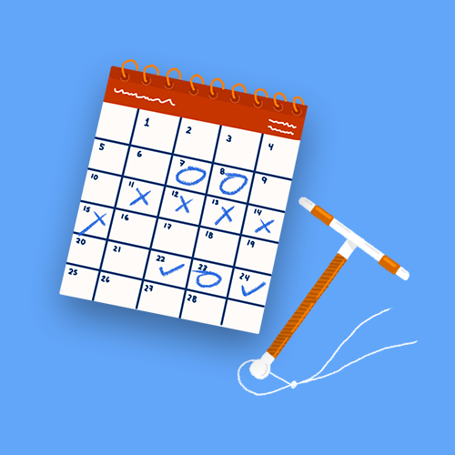
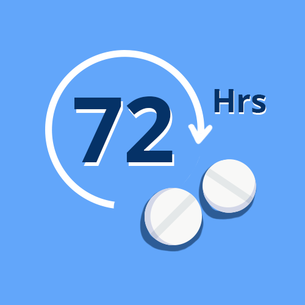
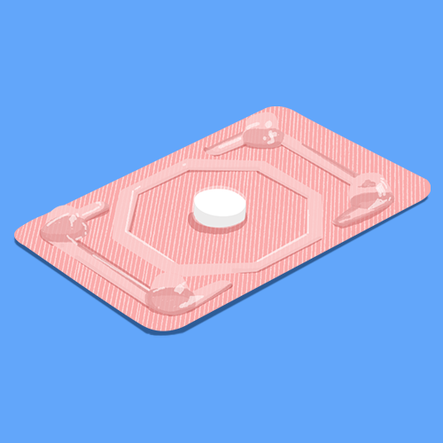
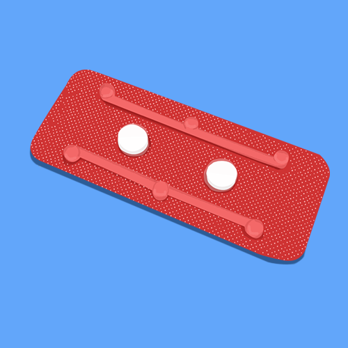

México dispone de una gran variedad de métodos anticonceptivos. Aquí, te explicamos sobre las alternativas con mayor eficacia para que tomes una decisión informada.
Si tienes dudas, contáctanos en redes sociales o a través de nuestro sitio web, además, puedes unirte a nuestra comunidad que no teme hablar de sexualidad en
Condones
El condón es uno de los métodos con mayor disponibilidad, ya que pueden ser encontrados no solo en farmacias sino en tiendas de conveniencia y supermercados. Además de ser el único método anticonceptivo de barrera que ofrece protección de infecciones de Transmisión Sexual (ETS), es uno de los pocos anticonceptivos diseñados para ser usados por hombres.
Existen dos tipos:
Condón femenino
Está diseñado para la anatomía de la mujer. Es un método anticonceptivo de barrera, que evita el contacto del pene y el esperma con el cuello uterino y la vagina.
¿Cómo se usa el condón femenino?
Se puede colocar ocho horas antes de la relación sexual, lo que evita interrupciones en el momento previo.
-

1. Abra el empaque solamente al momento de uso, y de forma cuidadosa incluyendo la extracción del envase, para evitar dañar el condón con las uñas, joyas, dientes, etc. No utilice ningún instrumento punzocortante.
-

2. Apriete el anillo interno con el pulgar y los dedos medios (el anillo debe tomar una forma de 8) inserte el anillo interior en la entrada de la vagina dejando el condon abierto afuera de la misma.
-
3. Deslice suavemente el anillo interno en la vagina y sienta que sube. Coloque el dedo índice dentro del condón y empuje el anillo interno lo más que pueda sin llegar a lastimarse.
-
4. Asegurar que el condón se insertó dentro del canal vaginal antes de que se produzca cualquier contacto entre el pene y el cuerpo de de la pareja. El anillo exterior debe permanecer fuera de la vagina, cubriendo los labios mayores y parte de la vulva.
-
5. Retirar el pene inmediatamente después de la eyaculación, mientras el condón se mantiene firmemente sujeto dentro del conducto vaginal. Para retirar el condón gire el anillo externo suavemente y tire del condón manteniendo el semen dentro, Envuelva el condón en papel sanitario y tire junto con su envoltura.
Condón masculino
El condón masculino es una cubierta que se adapta a la forma del pene erecto. Utilizado adecuadamente su tasa de efectividad es entre el 97 y 99%.
Son fabricados generalmente de látex y lubricados con aceite de silicón.
¿Cómo se usa el condón masculino?
-

1. Revisa la fecha de vencimiento antes de usarlo y ten cuidado de no rasgar el condón cuando lo estás sacando de su envoltorio.
-

2. Puedes poner una o dos gotas de lubricante sin aceite dentro del preservativo, facilitando su inserción
-

3. Deja media pulgada de espacio adicional en la punta para recoger el semen, luego saca el aire de la punta del condón, pellizcándolo con la mano.
-
4. Desenrolla el condón a lo largo del pene y llega tan lejos como sea posible.
-
5. Saca suavemente las burbujas de aire. Estas pueden hacer que el preservativo se parta.
Beneficios
- Eficacia del 97-99%
- Disponible en farmacias, supermercados y tiendas de conveniencia
- Sin necesidad de receta médica
- Precio aproximado de $10.00 MXN por condón masculino y $150.00 MXN por un paquete de dos condones femeninos
Preguntas frecuentes
¿El condón de sabor se puede utilizar solo para sexo oral?
Sí, el condón con sabor y aroma puede ser utilizado para sexo anal, vaginal y oral, brindándote la misma efectividad del 99%, considera que dicha efectividad depende del uso correcto.
¿Cómo sé si un condón se rompió?
En la mayoría de los casos se puede saber si el condón se rompió o no con un simple vistazo, ya que las roturas pueden ser evidentes. Cuando un condón se rompe, por lo general no es una rotura pequeña, al ser de hule látex, este puede romperse por completo debido a la fricción ocasionada.
¿Cuántos años tiene de caducidad un condón?
Un condón tiene fecha de caducidad de 5 años, ejemplo, si el condón indica que caduca en 2025, quiere decir que ese condón se fabricó en el año 2020.
¿Cuándo puedo colocar el condón femenino?
Puede ser previo al momento del coito o hasta 8 horas antes.
¿Puedo utilizar condón femenino y condón masculino al mismo tiempo?
No porque harían fricción y se puede romper uno de los dos o ambos, dejando sin protección.
¿Puedo usar el condón femenino durante la menstruación?
Sí, pero se tiene que colocar justo antes del coito.
¿Se puede perder el condón femenino dentro de mi cuerpo?
No
¿Puedo usar el condón femenino durante el embarazo?
Sí
¿Es reutilizable?
No, ambos tipos de condón se usan una sola vez.
¿Tienes más preguntas? Comparte tus dudas con nuestra comunidad aquí:
DIU
El dispositivo intrauterino es un método anticonceptivo de larga duración que se inserta dentro del útero de la mujer e inmediatamente protege de embarazos. El DIU se encuentra en múltiples presentaciones.
DIU de cobre
Los DIUs de cobre son dispositivos flexibles en forma de T que se colocan dentro del útero para evitar un embarazo. Son libres de hormonas y actúan por mecanismos locales que modifican el medio uterino, haciéndolo desfavorable para la fecundación. El DIU de cobre ofrece de 3 a 12 años de protección del embarazo, dependiendo del tipo de dispositivo que utilices. Si quieres quedar embarazada, te lo puedes quitar.
DIU hormonal
El dispositivo intrauterino liberador de levonorgestrel o dispositivo intrauterino hormonal (DIUH) es un método a base de hormonas. Se trata de una pequeña pieza de plástico en forma de T que se inserta en el útero. Una vez ahí, hace que su revestimiento se adelgace, y que el moco cervical se haga más espeso. Esto evita que el esperma fecunde al óvulo. Ofrece 2, 4 o 5 años de protección (dependiendo del tipo de DIUH que se use). Si deseas quedar embarazada, puedes quitártelo.
DIU de nucleo de plata
Dispositivo de cobre con un núcleo de plata. De los DIUs es el más reciente. Por sus propiedades reduce infecciones vaginales causadas por bacterias. Tiene una anatomía flexible y ergonómica que facilita la colocación. Hay una versión mini que pueden utilizar las mujeres que no han tenido hijos o tienen útero pequeño.
¿Cómo se usa?
-
El primer paso es hablar con tu médico, quien hará un examen para asegurarse de que el DIU sea adecuado para tu cuerpo.
-

Puedes colocarte el DIU en cualquier momento del mes. A algunos médicos les acomoda durante la menstruación, pero puede hacerse en cualquier otro momento, siempre y cuando no exista un embarazo.
-
Es común sentir algunos cólicos durante la colocación, pero desaparecerán con reposo o analgésicos. Algunas mujeres también pueden sentirse mareadas.
Beneficios del uso del DIU de cobre, hormonal o de núcleo de plata
- Eficacia del 99%
- Protección a largo plazo sin mucho esfuerzo
- Seguro para fumadoras y quienes sufren de hipertensión y diabetes
- Precio aproximado a partir de $500.00 MXN
Preguntas frecuentes
¿Los DIUs harán mi periodo abundante?
Los métodos anticonceptivos tienen un periodo de adaptación y cada mujer se adapta en diferente tiempo y con efectos secundarios que suelen pasar después de un tiempo
¿Cuánto tiempo dura el efecto anticonceptivo?
En promedio es de 5 años pero es recomendable una visita anual para revisión del dispositivo.
¿El DIU le hará daño a mi pareja?
El DIU no debería hacerle daño a tu pareja. A lo mejor oíste que las cuerdas pueden generar molestias a los hombres cuando se tienen relaciones, pero la mayoría de ellos no pueden sentirlas. Sin embargo, si les molestan, la persona prestadora de servicios de salud debería recortarlas. Además, normalmente se hacen más suaves con el tiempo.
¿Y si quiero quedarme embarazada?
Si estás lista para quedarte embarazada, pide a la persona prestadora de tus servicios de salud que te quite el DIU. Tu cuerpo debería volver a la normalidad inmediatamente. Puedes empezar a buscar un embarazo enseguida.
¿La inserción del DIU dolerá?
El dolor generado por la inserción del DIU varía según la persona. Desafortunadamente, no hay una droga maravillosa que lo disminuya.
Puedes tomar ibuprofeno antes del procedimiento y asegurarte que el dispositivo se inserte cuando tu cérvix está abierto, por ejemplo, cuando estás con tu período u ovulando. Incluso si hay algún dolor, puede valer la pena a cambio de tener relaciones sexuales libres de embarazos.
¿Tienes más preguntas? Comparte tus dudas con nuestra comunidad aquí:
Inyectable
Los inyectables evitan que los ovarios liberen óvulos. También espesan el moco cervical para ayudar a impedir que el esperma llegue a los óvulos. Hay diferentes tipos:
- Inyectable mensual: ¡Te mantiene protegida por un mes! Contiene una carga hormonal combinada, Noretisterona 50 mg y Estradiol 5 mg.
- EN-NET o inyectable bimensual: contiene progestágeno. ¡Te mantiene protegida por dos meses! Es una muy buena opción para las mujeres que no pueden tomar estrógeno.
- AMPD o inyectable trimestral: contiene progestágeno. ¡Te mantiene protegida por tres meses! Una muy buena opción para quienes no pueden tomar estrógeno.
¿Cómo se usa el inyectable?
Debe ser administrada por vía intramuscular profunda, de preferencia en la región glútea, inmediatamente después de su preparación.
-
El primer paso es hablar con tu médico. Ella o él, harán un examen para asegurarse de que este método sea adecuado para tu cuerpo.
-
Una vez que el especialista y tú decidan usar este método. La primera inyección anticonceptiva debe coincidir con el inicio del primer día de sangrado del periodo menstrual del mes. Después ya sólo tienes que estar al pendiente de las próximas colocaciones, según la presentación que uses sin importar si menstruas o no. Las inyecciones posteriores deben coincidir con la fecha de la primera inyección. Al tratarse de un método de corto plazo, tú decides el tiempo de duración.
Beneficios del inyectable
- Eficacia del 97 al 99%
- Fácil de usar
- Privado –nadie sabrá que lo usas, a menos que lo digas
- Precio aproximado a partir de $70.00 MXN
Preguntas frecuentes
¿El inyectable engorda?
Hasta el momento no existe ningún estudio que compruebe si los anticonceptivos hormonales engordan.
¿Y si esto impacta mi deseo sexual?
Aunque no es una queja común de las usuarias de inyectables, es un efecto secundario potencial. Así que el primer paso es verificar qué otras cosas en tu vida pueden estar causando un cambio en tu comportamiento sexual. ¿Estás estresada? ¿Estás teniendo dificultades en tu relación? Puedes cambiar algunas de estas cosas para aumentar tu deseo de tener sexo: trata de ejercitarte más, prueba cosas nuevas en la cama, trata de sostener una conversación abierta con tu pareja sobre tus sentimientos y necesidades.
¿Y si quiero quedarme embarazada pronto?
No puedes revertir el efecto de los inyectables. Así que, si ya te los pusiste, debes esperar 1, 2 o 3 meses (dependiendo del tipo de inyectable) para empezar a intentarlo. Sé paciente –algunas veces la fertilidad puede volver completamente hasta 10 meses después de la última inyección.
¿Por qué me dan dolores de cabeza?
Los dolores de cabeza son un efecto secundario potencial de los inyectables. Si tienes fuertes dolores de cabeza, piensa primero en otras razones que los puedan estar generando. Trata de minimizar el estrés, toma más agua para prevenir la deshidratación y asegúrate de que estás durmiendo lo suficiente. Si eso no ayuda, habla con una persona prestadora de servicios de salud al respecto.
¿Por qué me siento voluble?
Los cambios de humor son un potencial efecto secundario de los inyectables. Pero antes de considerar cambiar de método, evalúa qué otra cosa en tu vida podría estar causando los cambios de humor.
¿Tienes más preguntas? Comparte tus dudas con nuestra comunidad aquí:
Pastilla anticonceptiva de emergencia (PAE)
La pastilla de anticoncepción de emergencia (PAE) puede evitar un embarazo antes de que inicie. Esto quiere decir que la PAE no es lo mismo que las píldoras abortivas. Pueden estar disponibles en las vitrinas y se venden con o sin receta médica. Son similares a otras píldoras anticonceptivas, pero con dosis mucho más altas. Pueden funcionar hasta 5 días después de tener relaciones sexuales no protegidas, pero su efectividad disminuye cada día. Si quieres usar este método, deberías usarlo tan pronto como sea posible, después del sexo sin protección.
¿Cómo se usa la pastilla anticonceptiva de emergencia?
-

La pastilla debe tomarse después de la relación sexual sin protección, falla del método anticonceptivo o violencia sexual y antes de 72 horas. Entre más pronto sea la toma es más efectivo el método.
-

Si la presentación es de dosis única, no requiere otra toma adicional.
-

Si la presentación es de dosis única, no requiere otra toma adicional.
Beneficios de la pastilla anticonceptiva de emergencia
- Eficacia del 99%
- Disponible en farmacias y autoservicios a nivel nacional
- Sin necesidad de receta médica
- Precio aproximado a partir de $80.00 MXN
Preguntas frecuentes
¿Hay alguna restricción de edad para adquirir el anticonceptivo?
No, siempre y cuando sea recetado por una persona profesional de la salud.
¿La anticoncepción de emergencia funciona igual que las pastillas abortivas?
Si ya estás embarazada (incluso si todavía no lo sabes), la AE no funcionará. La AE solo previene el embarazo; no puede interrumpir uno que ya ocurrió. Y si accidentalmente tomas la AE antes de saber que estás embarazada, no le hará ningún daño al embarazo.
¿Y si la PAE me provoca náuseas?
Para prevenir las náuseas y el vómito, puedes tomar medicamentos contra las náuseas que se venden sin receta médica, una hora antes de tomar la primera dosis de la PAE. Ten en cuenta que te pueden causar somnolencia.
Si terminas vomitando dentro de la siguiente hora a la que tomaste tu dosis de PAE, repite la dosis por si acaso tu cuerpo no absorbió las hormonas.
¿Tienes más preguntas? Comparte tus dudas con nuestra comunidad aquí:
¿A quién puedo contactar para tener más información?
¿Tienes un embarazo no deseado? Visita safe2choose.org/es para hablar con una consejera entrenada sobre las opciones disponibles para abortar en tu país.
También puedes ponerte en contacto vía correo electrónico en info@safe2choose.org o vía chat en safe2choose.org/es.
¡Contacta a una consultora hoy mismo!